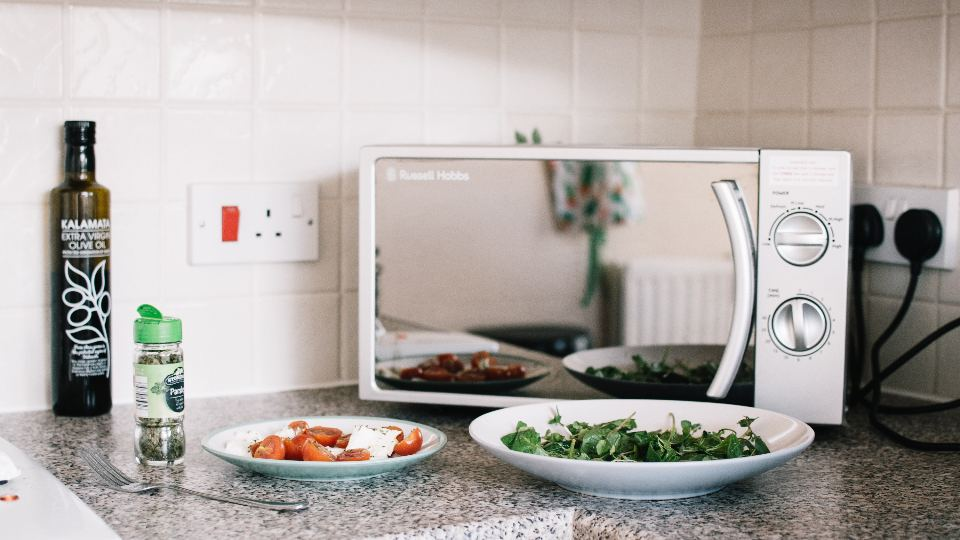
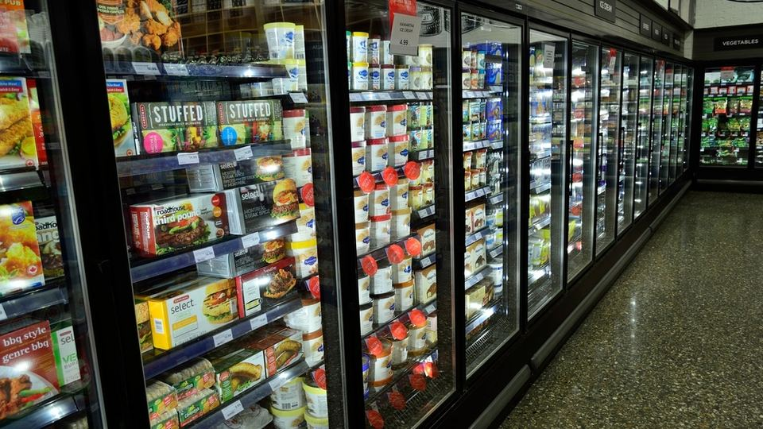

仕事から帰ってきて、そこから買い物をして料理をするのは、思っている以上に気力がいるものです。一人分だと食材を使い切れず、結局コンビニや外食が続いてしまう、という声もよく聞きます。
この記事では、一人暮らしの方が宅配弁当を選ぶときに見ておきたいポイントを、冷凍庫の大きさや食べる量、受け取りやすさといった「暮らしの条件」から整理しました。初めての方でも、自分に合うサービスを落ち着いて選べるようにまとめています。
一人暮らし向けの宅配弁当とは｜こんな人に向いています
宅配弁当は、調理済みのおかずやごはんが冷凍・冷蔵の状態で自宅に届き、電子レンジで温めるだけで食べられるサービスです。一人暮らしでよく使われるのは、まとめて届いて好きな日に食べられる冷凍タイプです。
「料理をしない日」を気持ちよく過ごすための備えとして考えると、選びやすくなります。
- 帰宅が遅い方：温めるだけなので、疲れている日でも食事の準備が数分で終わります
- 自炊が続かない方：一人分の食材を買って使い切れない、というストレスが減ります
- 栄養の偏りが気になる方：主菜と副菜がセットになったものが多く、野菜をとる機会が増えます
- 健康面で食事に気を配りたい方：カロリーや塩分に配慮したコース、食事制限に対応したコースを用意しているサービスもあります
- 買い物に行く時間を減らしたい方：届いた分を冷凍庫に入れておけば、急な予定変更にも対応しやすくなります
一人暮らしの宅配弁当の選び方｜失敗しない4つのポイント

1. 冷凍庫に入る量か
一人暮らしの冷蔵庫は、冷凍室がそれほど大きくないことが多いです。宅配弁当は1食ずつトレーに入っているため、思ったよりもかさばります。
申し込む前に、今の冷凍室にどれくらいの空きがあるかを確認しておくと安心です。届く食数を少なめにできるか、容器のサイズがどれくらいかも、公式サイトで確かめておきましょう。
2. 自分に合った量と味つけか
宅配弁当は、健康を考えて量や味つけを控えめにしているものが少なくありません。それが合う方もいれば、物足りなく感じる方もいます。
普段どれくらい食べるかを思い出し、ごはん付きかおかずのみか、ボリュームのあるコースがあるかを見ておくと、届いてから困ることが減ります。おかずのみのタイプなら、ごはんだけ自分で用意して量を調整することもできます。
3. 受け取りやすい届け方か
一人暮らしで日中家にいない場合、受け取りのしやすさは大切です。冷凍便は再配達になると手間がかかり、置き配に対応していないこともあります。
配達日や時間帯を指定できるか、届く間隔を変えられるかを確認しておきましょう。在宅しやすい曜日にまとめて届くように設定すると、受け取りの負担が軽くなります。
4. 休みやすく、やめやすいか
定期便は、決まった間隔で自動的に届くので便利な反面、出張や帰省で食べきれないこともあります。
お届けをスキップできるか、休止や解約の手続きはいつまでにどこからできるかを、最初に確認しておくと安心です。気軽に休める仕組みがあるかどうかが、長く続けられるかの分かれ目になります。
ポイント
迷ったときは、まずお試しセットや少ない食数から始めて、味・量・冷凍庫への収まり具合を確かめてから定期便を検討するのがおすすめです。
おすすめの宅配弁当を比較
一人暮らしで手軽さを重視するなら冷凍弁当、自分で少し調理したい方ならミールキット、健康面の配慮を重視するならカロリーや塩分に配慮したコースのあるサービス、という見方で比べると選びやすくなります。それぞれの特徴を下の表にまとめました。
おすすめサービス比較表
| サービス | タイプ（冷凍・冷蔵・キット） | 特徴 | 申込み |
|---|---|---|---|
| イチオシ健康直球便 | 冷凍弁当 | 最短翌日着の冷凍弁当 | 料金を見る |
| 2タイヘイのヘルシー御膳 | 冷凍弁当 | 70種類以上のメニュー・カロリー調整食 | 料金を見る |
| 3Dr.つるかめキッチン | 公式サイトで確認 | 専門医・管理栄養士監修の制限食 | 料金を見る |
※料金・内容は各社の公式情報・広告素材の記載をもとにした目安です（2026年10月時点）。最新の料金・条件は必ず公式サイトでご確認ください。
なお、冷凍庫に入りきらない場合は、宅配弁当の量を減らすほかに、冷凍庫を一時的に借りるという方法もあります。暮らしに合わせて無理のない形を選んでください。
一人暮らしの方の上手な使い方

宅配弁当は、毎食すべてを置き換えなくても十分に役立ちます。たとえば平日の夕食だけ宅配弁当にして、週末は好きなものを作る、という使い方なら食費とのバランスもとりやすくなります。
- 平日の夜だけ使う：疲れている日の「何を食べよう」という悩みが減ります
- ごはんは自分で炊いて冷凍しておく：おかずのみのタイプと組み合わせると、量を調整しやすくなります
- 汁物やサラダを1品足す：インスタントの味噌汁やカット野菜を添えるだけで、満足感が上がります
- 冷凍庫の中を整理しておく：届く前日に空きを作っておくと、受け取りが慌ただしくなりません
一般的に、冷凍の宅配弁当は1食あたり数百円台後半から千円前後が目安です。送料が別にかかる場合や、まとめて頼むと1食あたりの負担が変わる場合もあるため、詳しくは公式サイトでご確認ください。
利用するときの注意点
注意
- 送料を含めた金額：1食あたりの価格だけでなく、送料を含めた総額で考えると、外食やコンビニとの比較がしやすくなります
- 定期便の締め切り：スキップや休止は、次回のお届けの何日か前までに手続きが必要なことが多いです
- 賞味期限と保存方法：冷凍でも期限があります。届いたら日付を確認し、古いものから食べるようにしましょう
- 温め方の確認：容器ごと温められるか、ふたを外すかなど、商品ごとに指示が違うことがあります
注意
持病があって食事制限を受けている方は、宅配弁当を使い始める前に、かかりつけの医師や管理栄養士に相談してください。制限食のコースも、体調や指示の内容によって合う・合わないがあります。
よくある質問
一人暮らしだと、どれくらいの食数から始めるのがよいですか？
冷凍庫の空きと、宅配弁当を食べる日数から考えるのがおすすめです。初めは少なめの食数やお試しセットで、冷凍庫に収まるか、味や量が合うかを確かめると安心です。
宅配弁当だけで栄養は足りますか？
主菜と副菜がそろったお弁当は、栄養のバランスを考えて作られているものが多いです。ただ、量を控えめにしている商品もあるため、ごはんや汁物、果物などを足して、自分の体に合った量に整えてください。
留守がちでも受け取れますか？
配達日や時間帯を指定できるサービスなら、在宅しやすい日にまとめて受け取ることができます。置き配の可否や配送エリアは各社で異なるため、各社の公式サイトでご確認ください。
途中でやめたくなったら、すぐにやめられますか？
多くのサービスで休止や解約ができますが、手続きの方法や締め切りの日はそれぞれ違います。申し込む前に、マイページや公式サイトで条件を確認しておくと安心です。
まとめ
この記事のポイント
- 一人暮らしの宅配弁当は、冷凍庫に入る量かどうかを最初に確認する
- 量や味つけ、受け取りやすさ、休みやすさの4つを比べると、自分に合うサービスが見つけやすい
- 毎食置き換えなくても、平日の夜だけなど無理のない使い方で十分に助けになる
料理ができない日があっても、それは自分を責めることではありません。まずは少ない食数から試して、暮らしに合うかどうかをゆっくり確かめてみてください。